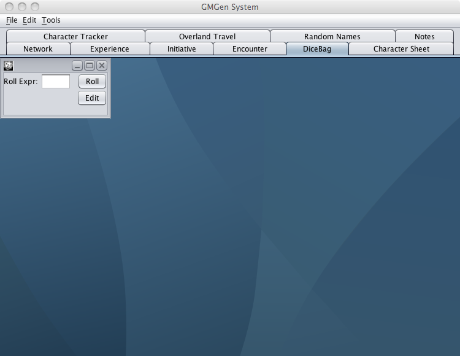
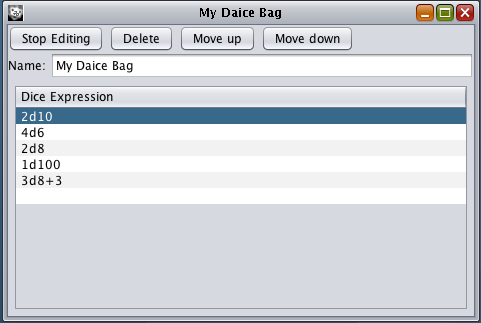
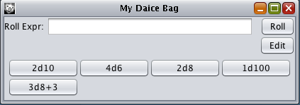

Dice Bag Tab

The Dice Bag allows you to enter an expression in standard
format and calculates a random value. Examples of allowed
expressions include:
-
1d10 - Number generated between 1 and 10 (simulates 1 roll of a
10 sided dice).
-
2d10 - Number generated between 2 and 20 (simulates 2 rolls of
a 10 sided dice).
-
1d10+1 - Number generated between 2 and 11 (simulates 1 roll of
a 10 sided dice plus 1).
-
1d10-1 - Number generated between 0 and 9 (simulates 1 roll of
a 10 sided dice minus 1).
-
1d10*5 - Number generated between 5 and 50 (simulates 1 roll of
a 10 sided dice multiplied by 5).
-
1d10/2 - Number generated between 1 and 5 (simulates 1 roll of
a 10 sided dice divided by 2).
-
1d3+1d4 - Number generated between 2 and 7 (simulates 1 roll of
a 3 sided dice plus one roll of a 4 sided dice).
-
(1d4)d6 - Number generated between 1 and 24 (simulates 1 roll
of a 4 sided dice and then a roll of a number of six sided dice
equal to the result of the first roll).
Notes:
-
Output is always an integer.
-
The Dice Bag window can be expanded to show more complex
expressions.
-
Spaces are ignored.
-
Maximum dice size is 100,000,000,000. GMGen & PCGen will
hang if this is exceeded.
-
Standard Mathematical rules apply so brackets () can be used to
control order of calculation.
-
The Dice Bag can also be used as a calculator. Most expressions
work when entered into the Roll Expr: field.
-
Really complicated dice rolls can be computed, for example
(1d6)d8 will roll a d6 and then roll that many d8's and add them
up.
Use:
When first activated the Dice Bag Tab displays one blank Dice
Bag window. You can create a new Dice Bag window by selecting
New
from the
File
menu.
To create permanent Dice rolling sets click the
Edit
button which will bring you into edit mode.
Double click a blank space below the Dice Expression pane to add
Dice Expressions. Use the
Move Up
and
Move
Down
buttons to change the order of your Expressions.

When you click the
Stop Editing
Button your
custom Dice Expressions will appear as buttons on the bottom of the
Dice Bag window.

To save your custom Dice Expressions choose
Save
from the
File
menu and give
your Dice Bag a name, the name will appear in the top left corner
of the window. You can then close the Dice Bag and open it at any
time in the future by choosing
Open
from the
File
menu. You may have more then one Dice Bag
open at a time.